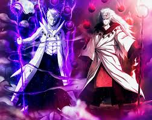

THE PATH OFNARUTO SHIPPUDEN
Naruto Shippuden continues Naruto Uzumaki's story after a time-skip, as he grows stronger and faces threats that will decide the fate of the shinobi world.
About the Saga
Naruto Shippuden continues Naruto Uzumaki's story after a time-skip as he grows stronger and faces larger threats.
Friendship, perseverance, and redemption are the main themes running through every arc, every battle, and every bond formed along the way.
Bonds over power
Team 7's growth is measured in trust, not just jutsu.A title earned
The rank of Hokage is the village's highest honor.Scars into strength
Every character's past shapes the shinobi they become.Main Characters
The shinobi whose choices carry the story — each shaped by loss, loyalty, and the will to protect what matters.
Naruto Uzumaki
An unpredictable, never-give-up ninja who becomes the bridge between the Nine-Tails and peace itself.
Sasuke Uchiha
Driven by vengeance and later redemption, his path tests everything Team 7 stands for.
Sakura Haruno
Trained under Tsunade, she grows from teammate into one of the village's finest healers and fighters.
Kakashi Hatake
The calm, sharingan-wielding mentor who holds Team 7 together through every storm.
Path Through the Arcs
A rough chronology of the road from genin to the Fourth Great Ninja War — order matters here, so each stage is numbered.
Homecoming
Naruto returns from training with Jiraiya, and Team 7 reunites under a very different shadow.
Akatsuki Rising
The hunt for the Tailed Beasts accelerates, and the cost of the Akatsuki's plan becomes clear.
Pain's Assault
The Hidden Leaf faces its greatest single threat yet, testing Naruto's resolve to protect it.
The Shinobi Alliance
Nations that once warred are forced to unite against a common, world-ending enemy.
Fourth Great Ninja War
Every bond built across the series is tested on one battlefield, for the future of the shinobi world.
Top 10 Strongest Characters
A fan ranking of raw power across the series, from breakout prodigies to god-tier threats.
| Rank | Character | Notable Power | First Appearance |
|---|---|---|---|
| 1 | Naruto Uzumaki | Sage of Six Paths | |
| 2 | Sasuke Uchiha | Rinnegan | |
| 3 | Madara Uchiha | Ten-Tails Power | |
| 4 | Kaguya Ōtsutsuki | Chakra Goddess | |
| 5 | Hashirama Senju | Wood Release | |
| 6 | Itachi Uchiha | Tsukuyomi | |
| 7 | Minato Namikaze | Flying Raijin | |
| 8 | Obito Uchiha | Kamui | |
| 9 | Kabuto Yakushi | Sage Mode | |
| 10 | Gaara | Sand Manipulation |
Images & Media
Stills, sound, and motion from the archive — restyled, not replaced.
Featured Still
Gallery
Theme — Sadness and Sorrow
Naruto vs. Sasuke — Final Battle
Live Canvas
Emblem (SVG)
From the Shinobi
"I never go back on my word — that is my ninja way."
Power means nothing without people worth protecting.
Those who break the rules are trash — but abandoning your friends makes you worse.
Fan Poll & Inputs
Tell us where your loyalty lies in the shinobi world.
From the Ninja Scrolls
The remaining tags of the archive, folded into one final scroll.
Click to expand — a shinobi's vow
I never go back on my word! That is my ninja way!
function rasengan(){ return "Rasengan"; }Keyboard: Ctrl+N
Sample output: OK
